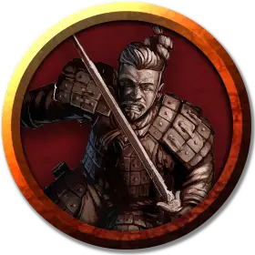

Глиняный гладиатор
Clay Gladiator
Средний Конструкт, без мировоззрения

Класс Доспеха 17 (природный доспех, щит)
Хиты 112 (15к8 + 45)
Скорость 30 футов, лазая 30 футов (Гладиатор может лазать по сложным поверхностям, включая потолки, без совершения проверок характеристик.)
| мод | спас | ||
|---|---|---|---|
| СИЛ | 18 | +4 | +7 |
| ЛОВ | 15 | +2 | +5 |
| ТЕЛ | 16 | +3 | +6 |
| мод | спас | ||
|---|---|---|---|
| ИНТ | 10 | +0 | +0 |
| МДР | 12 | +1 | +1 |
| ХАР | 15 | +2 | +2 |
Навыки Атлетика +10, Запугивание +5
Иммунитет к урону яд
Иммунитет к состояниям испуг, отравление, очарование
Чувства пассивное Восприятие 11
Языки Общий (Не говорит)
Опасность 5 (1800 опыта)
Бонус мастерства +3
Особенности
Жестокость. Рукопашное оружие причиняет одну дополнительную кость своего урона, когда гладиатор попадает им (уже включено в атаку).
Стойкий. Гладиатор не может совершать дальнобойные атаки и не может быть обезоружен.
Природа конструкта. Гладиатор не нуждается в воздухе, пище, питье или сне.
Действия
Мультиатака. Гладиатор совершает три рукопашные атаки.
Копье. Рукопашная атака оружием: +7 к попаданию, досягаемость 5 футов или дистанция 20/60 футов, одна цель. Попадание: Колющий урон 11 (2к6 + 4), или колющий урон 13 (2к8 + 4), если используется двумя руками для совершения рукопашной атаки.
Удар щитом. Рукопашная атака оружием: +7 к попаданию, досягаемость 5 футов, одно существо. Попадание: Дробящий урон 9 (2к4 + 4). Если цель — существо с размером не больше Среднего, она должна преуспеть в спасброске Силы Сл 15, иначе будет сбита с ног.
Реакции
Парирование. Гладиатор добавляет 3 к КД против одной рукопашной атаки, которая должна попасть по нему. Для этого гладиатор должен видеть атакующего, и должен использовать рукопашное оружие.
Описание
Каждый гладиатор – это големоподобное существо с бронзовым копьём в одной руке и деревянным щитом в другом.
Гладиаторы сражаются на потеху шумной публике. Некоторые сражаются в бойцовых ямах, где проигрыш равен смерти, а другие являются профессиональными дуэлянтами, получающими большое жалованье и редко сражающимися до смерти.